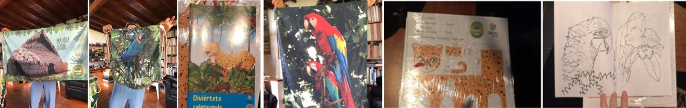

Orchid Conservation

Orquideas para la paz
(a) Scientific work (b)Community work (c)Resources.
Orquídeas para la Paz or Orchids for peace project, is a project that involve the research of orchids in regions of Colombia that have been affected by the conflict with the help of the community and their own sustainability.
This project is part of "Turismo Comunitario y Horticultura como una Estrategia para el Desarrollo Rural de Florencia, Caquetá Durante el Posconflicto" funded by MinCiencias, Colombia, and it was done mainly in Reserva Natural Comunitaria y Ecoturística el Manantial.
The main objective of the project is the elaboration of a management plan, which allows the reserve to have a sustainable future and, in addition, dictates clear regulations that avoid later administration problems, allowing the other aspects considered to work properly. This management plan must seek the well-being and good relationship of the different inhabitants and communities involved and the conservation of fauna and flora that inhabits there.
At present, the priority that a tropical country like Colombia, which has one of the greatest biodiversity in the world, must face is to seek its protection and the Natural Reserves of Civil Society contribute to this protection efficiently. El Manantial Community Nature and Ecotourism Reserve still has wooded masses so close to the urban area of Florencia and with proper management its natural resources can be not only conserved, but also increased.